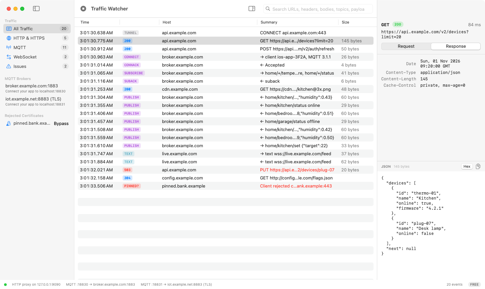
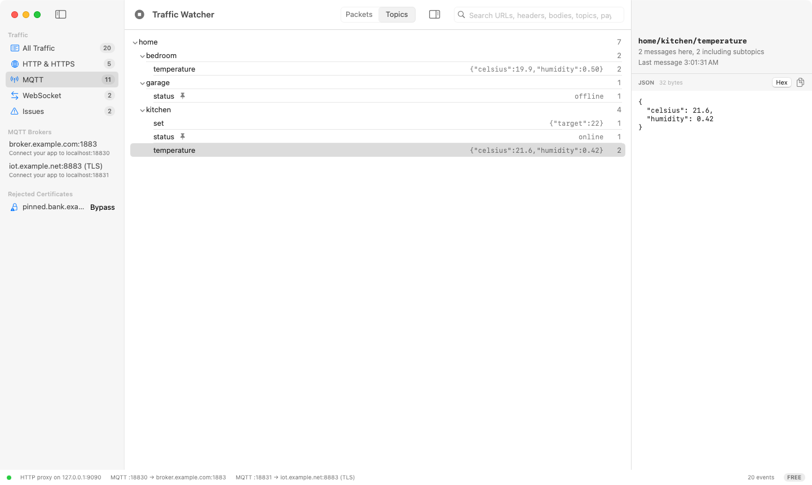
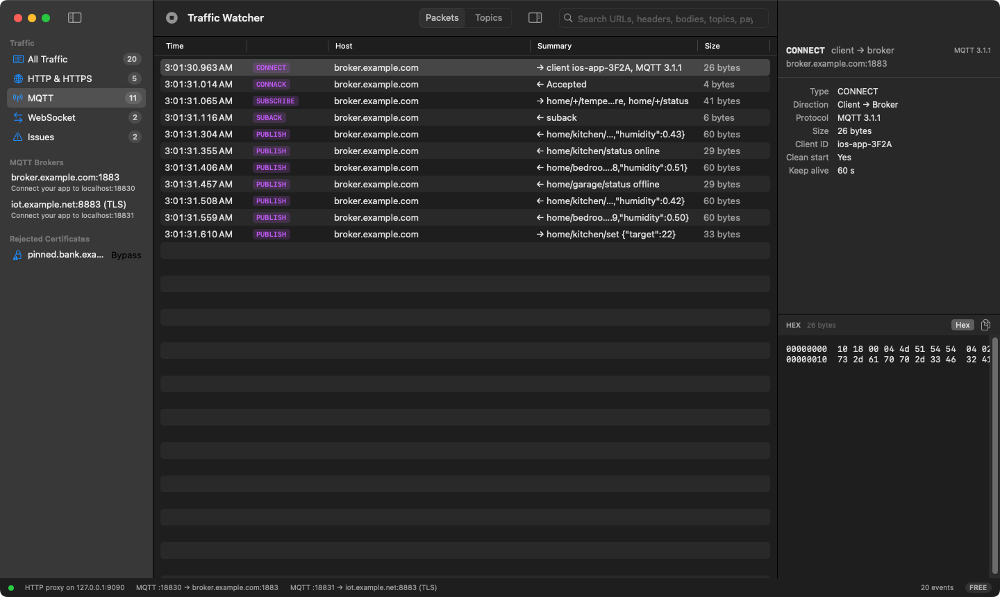
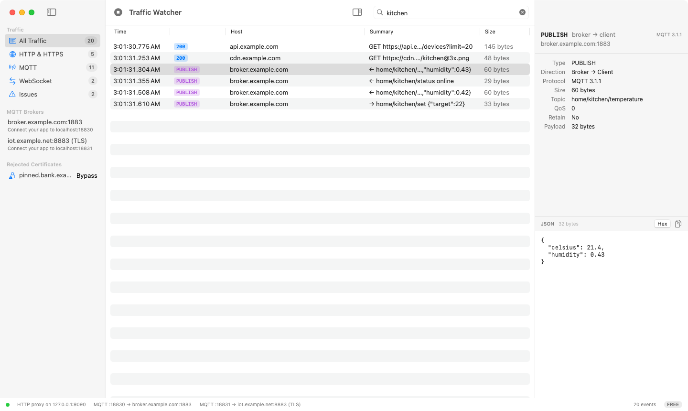
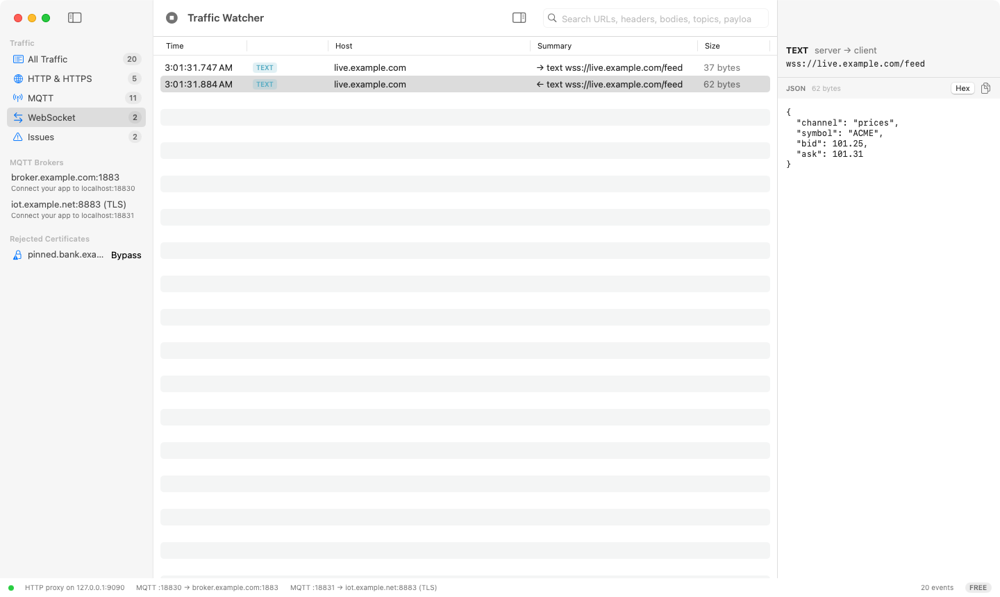
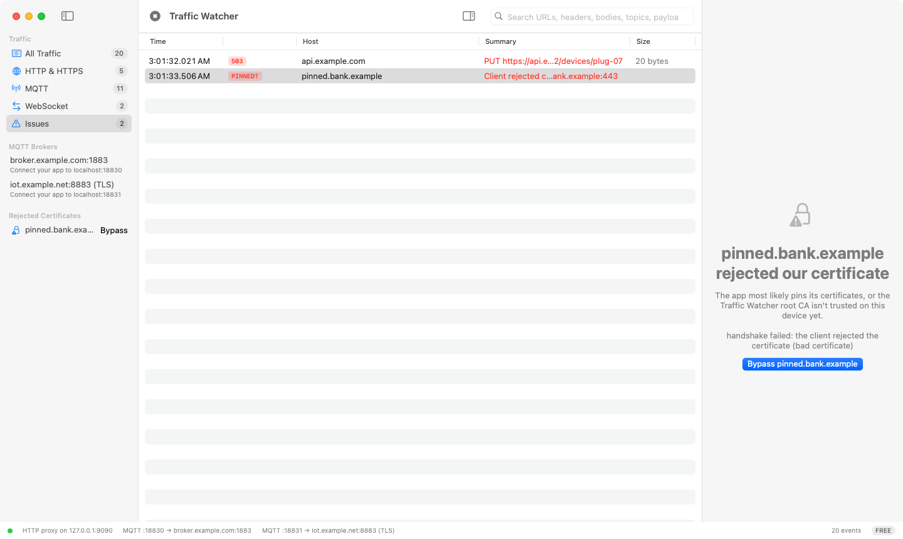

Decrypt HTTPS
A local root certificate issues per-host certificates on the fly. Install it on a device or straight into the iOS Simulator from Settings.
Public beta · free while it lasts
Wiretide is a native macOS debugging proxy that puts HTTPS requests, WebSocket frames and MQTT packets in one timeline, in the order they happened.
macOS 14 Sonoma or later · Apple silicon and Intel · Notarized by Apple

Features
A local root certificate issues per-host certificates on the fly. Install it on a device or straight into the iOS Simulator from Settings.
Every packet from CONNECT to DISCONNECT, for MQTT 3.1.1 and 5, with properties, QoS, retain flags and topic aliases resolved.
Upgrades over HTTP or decrypted HTTPS are relayed with every frame decoded. MQTT-over-WebSocket subprotocols show up as MQTT.
Full-text search across URLs, headers, text bodies, MQTT topics and payloads, in the live session and the ones you saved.
When a client rejects the certificate, Wiretide says so instead of failing silently. Bypass the host with one click.
HAR 1.2 for HTTP and JSON Lines for MQTT, so a capture can go into a bug report, a test fixture or another tool.
Built for MQTT
Most proxies stop at HTTP. IoT and real-time apps don't. Point your app at a local port and Wiretide relays it to your broker, decoding every packet on the way through.
home/kitchen/temperature the way you think about it, with the last payload and message counts per topic.

A closer look
Written in SwiftUI on top of SwiftNIO. Light and dark mode, universal for Apple silicon and Intel, and no Electron.



Pricing
Everything is free during the beta. Join the waitlist to lock in the early-bird price for Pro.
$0
Forever, for capturing and inspecting.
Early-bird pricing for the waitlist
$79one time
Includes 12 months of updates. Keep using your version forever.
Features marked beta arrive during the beta period. Prices in USD; tax is calculated at checkout.
FAQ
No. Captures are stored locally in a SQLite database on your Mac. The only network call the app makes on its own is checking your Pro license with the store, plus checking for updates.
A debugging proxy needs to run a local proxy, install a root certificate and talk to the iOS Simulator, which the App Store sandbox doesn't allow. Wiretide is signed with a Developer ID and notarized by Apple, and it updates itself.
Add your broker in Settings. Wiretide listens on a local port, for example localhost:18830, and forwards to the broker. Point your app at that port. MQTT over WebSocket is picked up automatically through the HTTP proxy.
Yes. The Simulator uses your Mac's proxy settings, and Settings can install the root certificate into a booted Simulator for you. For a physical device, set the Wi-Fi proxy to your Mac and trust the certificate on the device.
Pro keeps working forever on every version released within 12 months of your purchase. Renew if you want the newer ones. A license also keeps working offline for 30 days between checks.
Join the waitlist for release news and the early-bird price. No spam, one email when it matters.
Free during the beta · macOS 14 or later